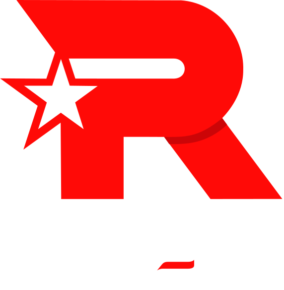

LCK
- T1
- Geng
- Kt
- DK
- Hle
- Kdf
- Bro
- Ns
- Fox
- Drx


KT
2012년 10월 10일 공식 창단되었다. 스타크래프트 시절에 이어 2012 - 2013 윈터부터
LCK의 역사에서 SKT T1과 자웅을 가리던 전통의 명문 팀이었으며,
2019년부터 2022년 스프링까지의 긴 암흑기를 거쳐 2022 서머부터 명가의 부활을 노리고 있다.
또한 과거 LCK가 급격하게 성장하게 된 시기부터 현재까지 네이밍 스폰서와 팀명 변경 없이 쭉 이어저 내려오는
대기업을 중심으로 한 한국 롤팀의 대표 사례로서 남아있으며,
팀의 모태라고 할 수 있는 스타크래프트 시절 팀 명칭을 이어받아 계속 사용하고 있는 유일한 팀이다.